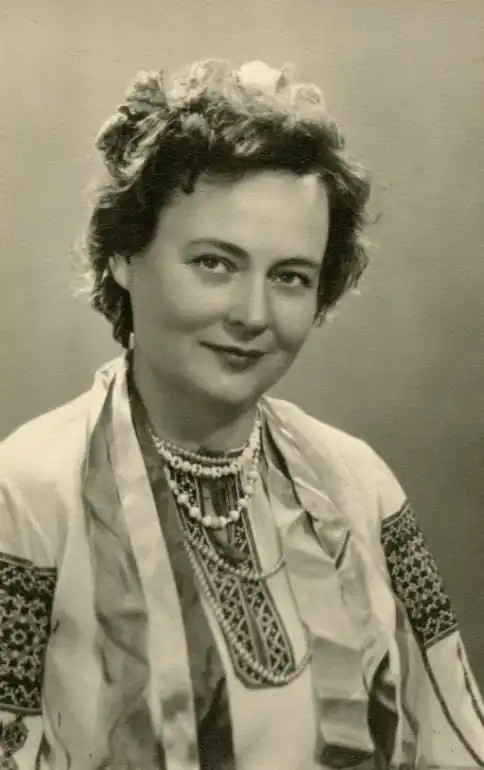
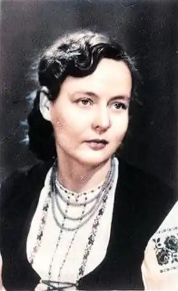
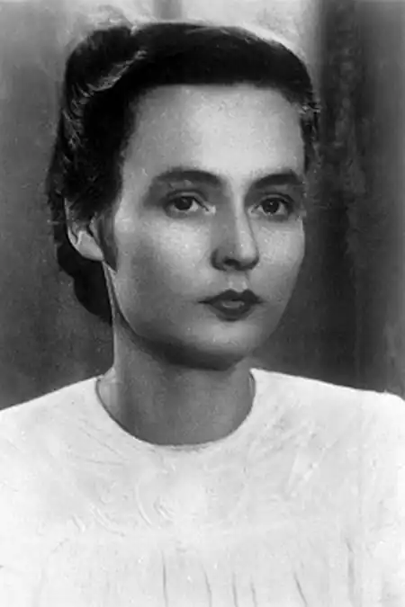

1918, 3 лютого – у місті Прилуки на Чернігівщині народилася Любов Забашта – українська поетеса, драматург, прозаїк, дружина поета Андрія Малишка.
У шкільні роки почала писати вірші. Після закінчення школи навчалася в Одеському водному інституті, який закінчила в 1940 році. Під час війни працювала інженером-конструктором на Рибнінській судноверфі. На війні загинув її чоловік, із котрим прожила майже рік. Залишившись удовою з сином на руках, прийшла працювати на київський завод "Ленінська кузня". Закінчила заочно мовно-літературний факультет педінституту імені Горького (нині Національний педагогічний університет імені Михайла Драгоманова). Далі працювала завідувачкою відділу поезії журналу "Дніпро".
У грудні 1956 року вийшла заміж за Андрія Малишка. Подружжя замешкало в Києві в будинку письменників "Політ", на фасаді якого 12 березня 2003 року поетесі встановили пам'ятну дошку. Перша збірка її віршів для дітей "Паляниця-білолиця" була опублікована 1963-го. Пізніше з'явилися її поетичні збірки, книжки з прозою, п'єси та драматичні поеми. У доробку Забашти є й роман "Там, за рікою, — молодість" (1970), художньо-документальна повість "Будинок мого дитинства" (1983), дитяча лірика. Тарасові Шевченку авторка присвятила драматичну поему "Тернова доля", поезії "Землі Бояне славний", "Міцні, як Шевченкове слово", "Шевченко й Олдрідж" (1961). Збірки віршів для малят "Коли я виросту", "По гриби", "Пісня зеленого лісу", повість "Будинок мого дитинства" й інші. В народі співають пісні на її слова "Ой вербиченько", "Червона ружа", "Криниця мого дитинства", "Засихає в степу материнка" й інші. Померла Любов Забашта 21 липня 1990 року, похована в Києві.